Recent advancements in neural visual geometry, including transformer-based models such as VGGT and Pi3, have achieved impressive accuracy on 3D reconstruction tasks. However, their reliance on full attention makes them fundamentally limited by GPU memory capacity, preventing them from scaling to large, unordered image collections. We introduce MERG3R, a training-free divide-and-conquer framework that enables geometric foundation models to operate far beyond their native memory limits. MERG3R first reorders and partitions unordered images into overlapping, geometrically diverse subsets that can be reconstructed independently. It then merges the resulting local reconstructions through an efficient global alignment and confidence-weighted bundle adjustment procedure, producing a globally consistent 3D model. Our framework is model-agnostic and can be paired with existing neural geometry models. Across large-scale datasets—including 7-Scenes, NRGBD, Tanks & Temples, and Cambridge Landmarks—MERG3R consistently improves reconstruction accuracy, memory efficiency, and scalability, enabling high-quality reconstruction when the dataset exceeds memory capacity limits.

MERG3R pipeline. (i) A visual-similarity graph is built and a pseudo-temporal ordering is found via Hamiltonian path. (ii) Images are partitioned into overlapping subsets using interleaved sampling for geometric diversity. (iii) Each subset is reconstructed independently by a pretrained geometric foundation model. (iv) Submaps are aligned via Sim(3) and globally refined with confidence-weighted bundle adjustment.
DINO-based visual similarity is used to approximate a Hamiltonian path, producing a pseudo-temporal ordering that maximizes visual continuity.
Images are re-permuted with interleaved sampling to ensure geometric diversity within each cluster, then split into overlapping windows that fit in GPU memory.
Each subset is processed independently by a geometric foundation model (VGGT, Pi3) to predict camera parameters, dense depth maps, and confidence scores.
Submaps are aligned via confidence-weighted Sim(3) estimation. Point tracks built with SuperPoint + LightGlue are refined with gradient-based bundle adjustment.
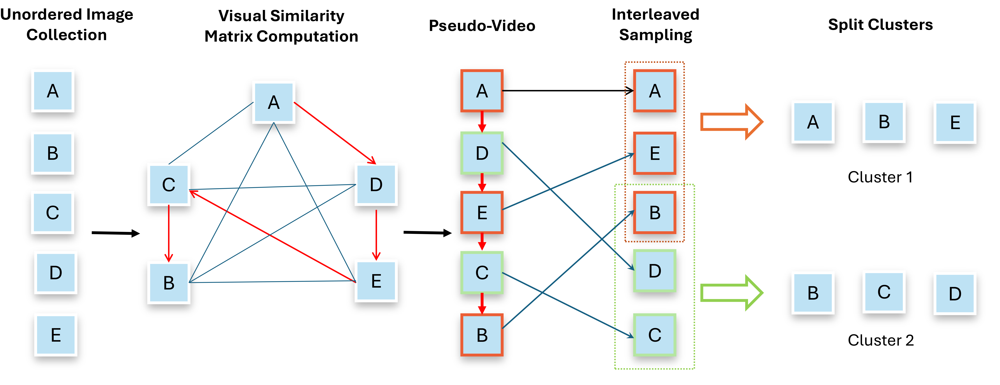
Image partitioning. We compute a visual-similarity matrix and find a Hamiltonian path (red) to produce a pseudo-video sequence. Images are then reordered by interleaved sampling and divided into overlapping clusters.
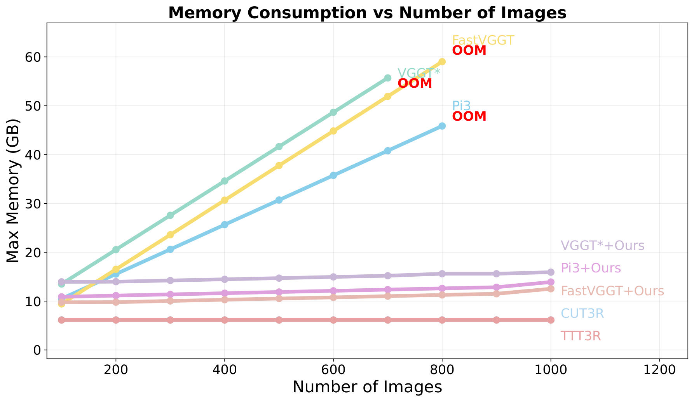
GPU memory usage. MERG3R dramatically reduces peak GPU memory, enabling reconstruction of 1,000+ image datasets.
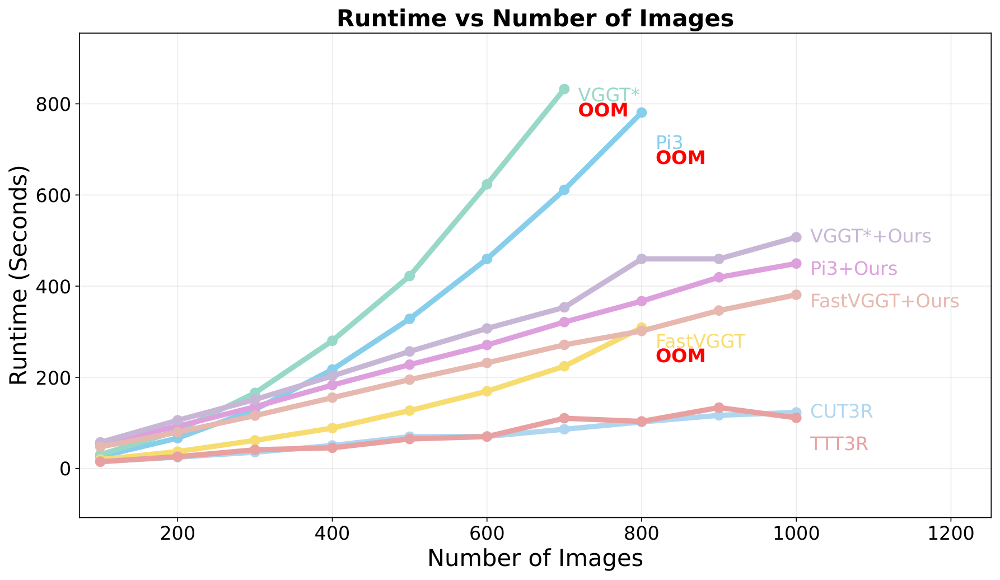
Runtime comparison. Our divide-and-conquer design keeps runtime tractable as the number of images scales to thousands.
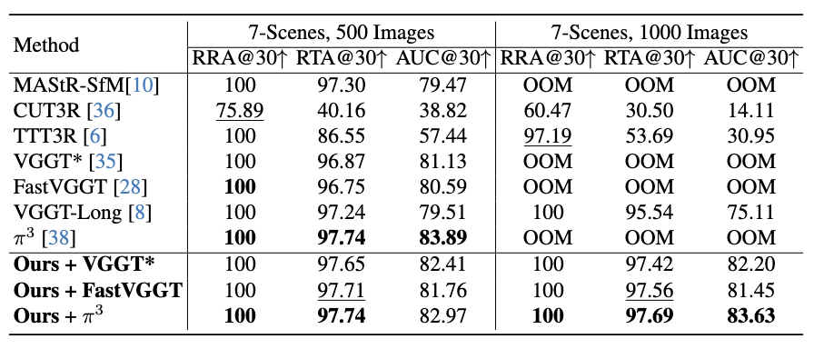
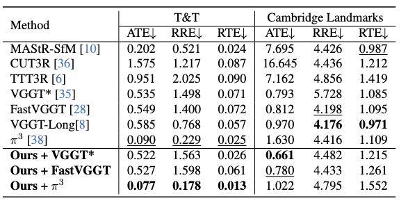
Qualitative trajectory comparison on a 300-image Cambridge Landmarks sequence. Estimated poses (red) vs. ground truth (green).
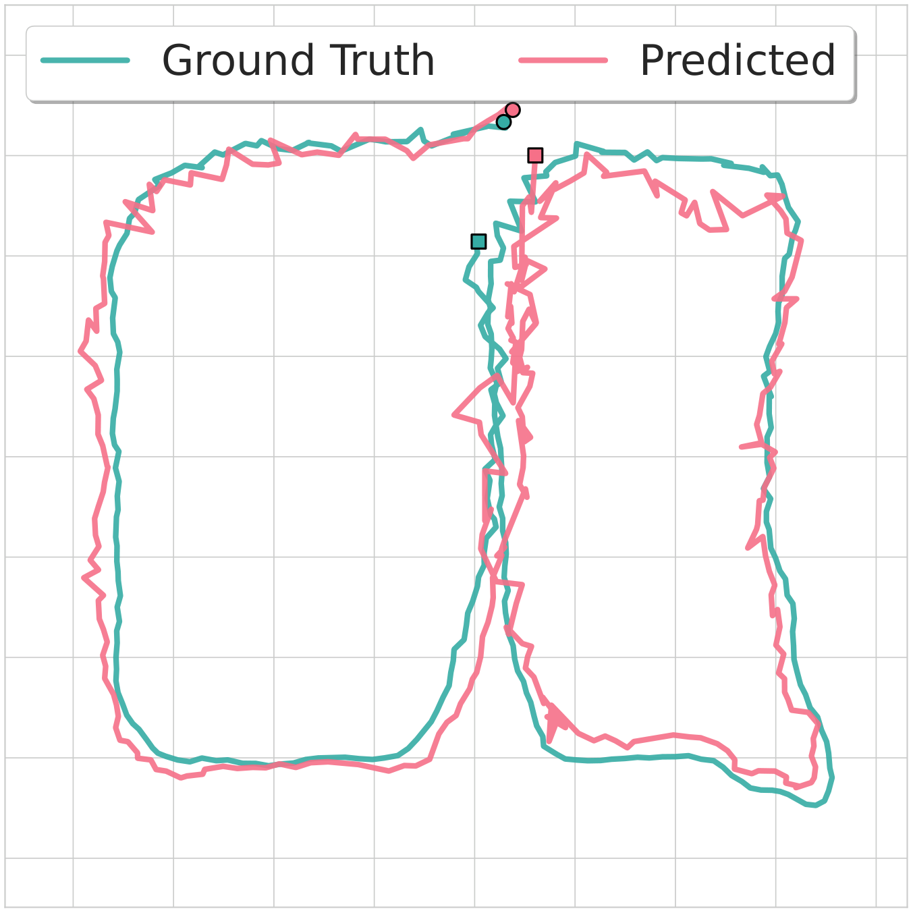
(a) TTT3R
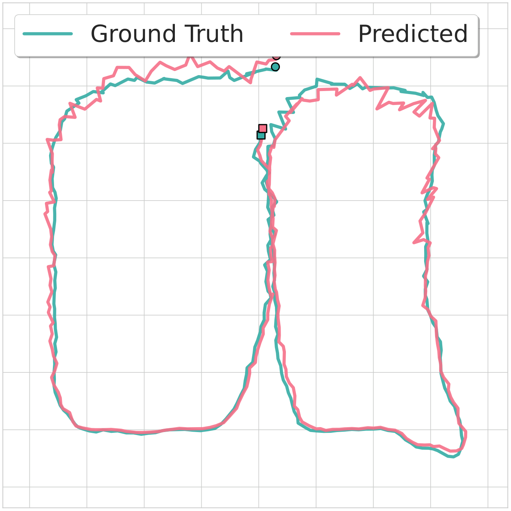
(b) π³
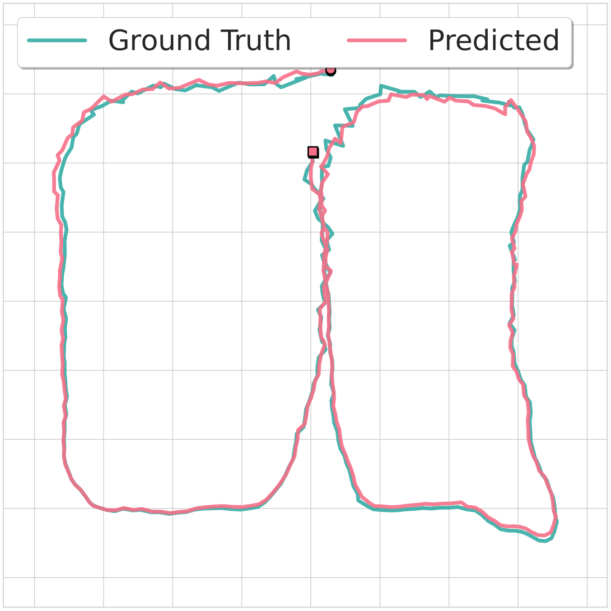
(c) Ours + π³
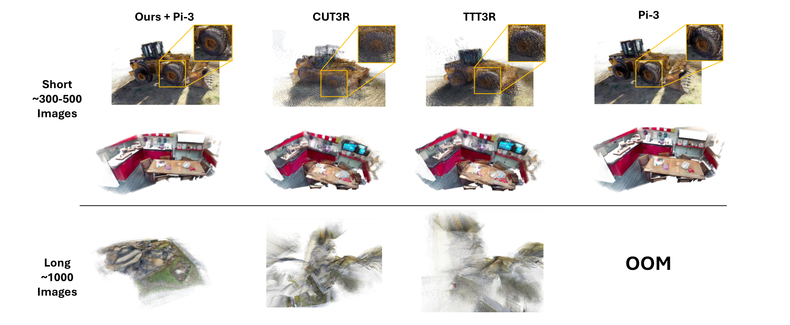
Point cloud visualization. MERG3R preserves fine-grained geometric details in both large outdoor scenes (Tanks & Temples) and challenging indoor environments.
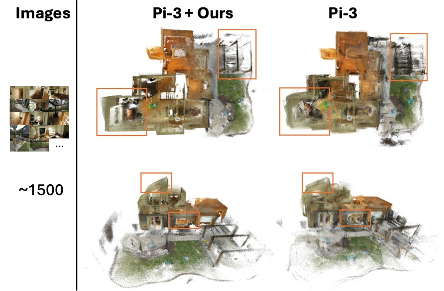
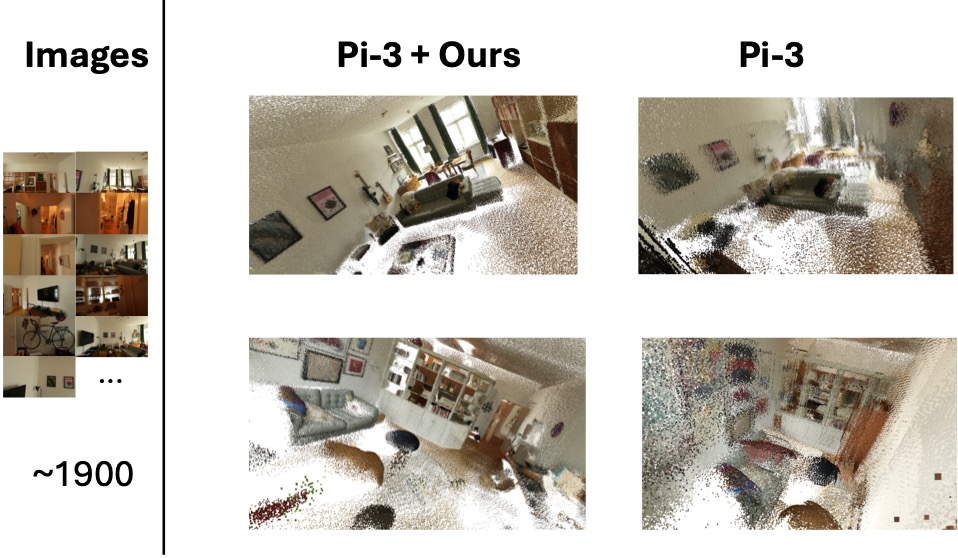
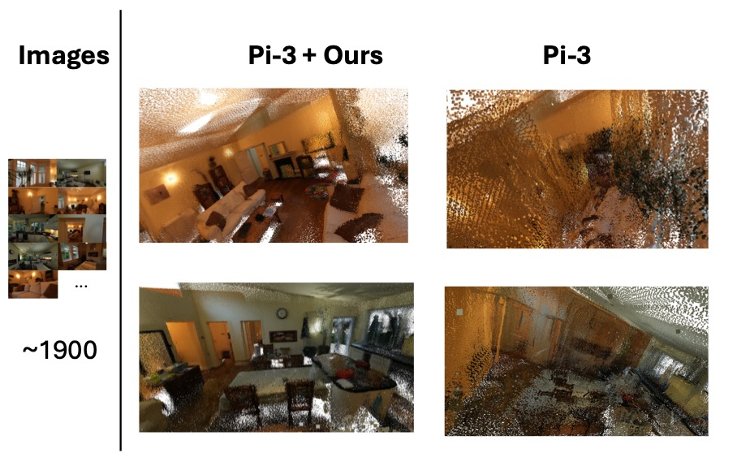
Large-scale reconstruction comparison. MERG3R achieves consistently better performance on the challenging Zip-NeRF scenes.
@article{cheng2025merg3r,
title = {{MERG3R}: A Divide-and-Conquer Approach to Large-Scale Neural Visual Geometry},
author = {Cheng, Leo Kaixuan and Shaikh, Abdus and Liang, Ruofan and
Wu, Zhijie and Guan, Yushi and Vijaykumar, Nandita},
journal = {arXiv preprint},
year = {2026}
}